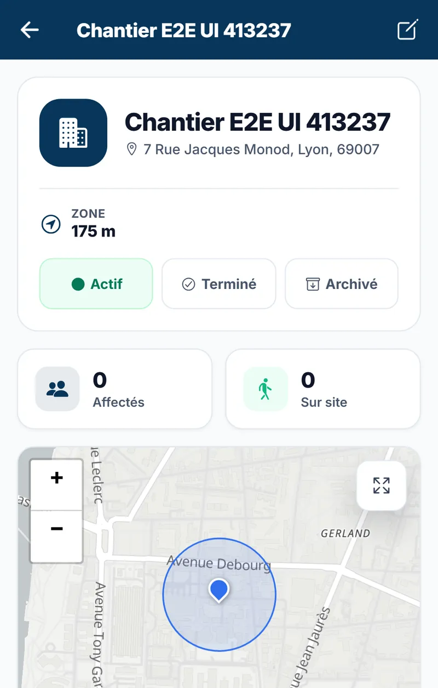
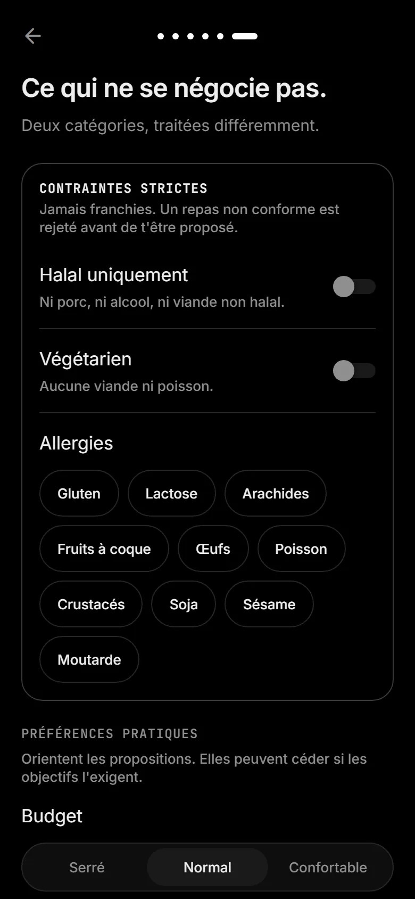
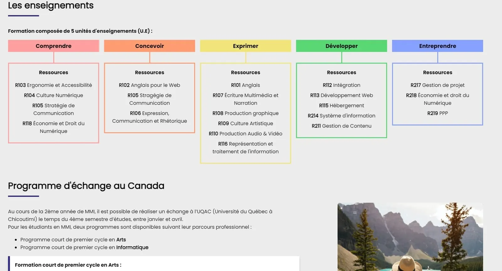
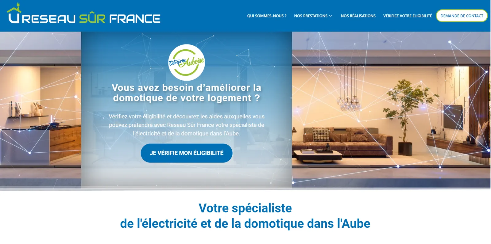

ZiyadChaabi
Ingénieur développeur Full Stack
J'ai livré seul une application métier en production (Angular, NestJS, AWS) pour quatre entreprises du BTP, et je viens du design.
Disponible immédiatement, en CDI21 mois d’expérience en stages et alternance
Basé à Troyes, prêt à déménager, hybride ou télétravail
Je pense d’abord aux gens qui vont se servir de l’outil, sur un chantier ou un casque VR sur la tête, et seulement ensuite à la stack.
Projets choisis
Quatre projets racontés en détail : le problème, ma part, les décisions, le résultat.
-



BTP-360
L'application qui a remplacé les fichiers Excel de quatre sociétés du bâtiment.
En production sur AWS, sur le web et sur Android.
- Ionic 8
- Angular 20
- NgRx
- Capacitor
- NestJS 11
-



SubForge
Un prototype de coach nutrition : on décrit un repas en une phrase, l'IA propose les macros, on valide.
Un prototype Android, construit pour apprendre.
- React Native
- Expo
- TypeScript
- Supabase
- Edge Functions
-


Distri Sûr France
Dix mois d'alternance pour créer la boutique en ligne d'une entreprise.
Le site e-commerce officiel de l’entreprise, en ligne.
- Odoo
- Python
- HTML
- CSS
- Figma
-


Réalité virtuelle
Funfair VR et Hotel Murder VR, deux projets du Master. Ma part : des attractions, un menu à portails, le son, et une scène d’enquête.
Deux projets d’équipe, code public sur GitHub.
- Unity 2022.3
- Unity 6
- C#
- URP
- XR Interaction Toolkit
Expérience
-
Mars à oct. 2026
Full Stack AI Engineer · Iso Sûr France
Troyes, stage de fin d’études, développeur principal
Conçu, développé et mis en production seul BTP-360, qui remplace les fichiers Excel d’Iso Sûr France et de ses trois sociétés sœurs.
- Angular
- Ionic
- NestJS
- Prisma
- PostgreSQL
- AWS
-
Nov. 2023 à août 2024
Développeur Web Full Stack E-commerce · Distri Sûr France
Troyes, alternance de 10 mois
Créé le site e-commerce officiel de l’entreprise, des maquettes Figma à la mise en production sur Odoo.
- Odoo
- Python
- Figma
- SEO
-
Avr. à juin 2023
Développeur Web Front-End · Réseau Sûr France
Saint-André-les-Vergers, stage de 3 mois
Livré le nouveau site officiel de l’entreprise dans les délais du stage, dans sa charte graphique.
- WordPress
- JavaScript
- Figma
- Suite Adobe
Formation
- 2024 à 2026Master Informatique, Sciences et Technologies du Métavers, INSA Hauts-de-France, Valenciennes
- 2021 à 2024BUT Métiers du Multimédia et de l’Internet, parcours Développement web et dispositifs interactifs, IUT de Meaux, Université Gustave Eiffel
- 2021Bac STI2D, option Systèmes d’information et numérique, Lycée Saint-Joseph La Salle, Troyes
Stack
Chaque outil mène au projet qui le prouve. Plein : utilisé en production. Contour : utilisé sur des projets.
Front et mobile
- Angularprouvé par BTP-360, en production
- Ionicprouvé par BTP-360, en production
- NgRxprouvé par BTP-360, en production
- Capacitorprouvé par BTP-360, en production
- TypeScriptprouvé par BTP-360, SubForge, en production
- RxJSprouvé par BTP-360, en production
- React Nativeprouvé par SubForge, sur des projets
- Expoprouvé par SubForge, sur des projets
- Tailwindprouvé par Turaty Naturels, sur des projets
- Android (Java)prouvé par lolop, sur des projets
- Kotlinprouvé par Facture Android, sur des projets
Back-end et données
- NestJSprouvé par BTP-360, en production
- Prismaprouvé par BTP-360, en production
- PostgreSQLprouvé par BTP-360, SubForge, en production
- Socket.IOprouvé par BTP-360, SUBCHAINE, en production
- Supabaseprouvé par SubForge, sur des projets
- Node.jsprouvé par ZABI, SUBCHAINE, sur des projets
- MongoDBprouvé par ZABI, sur des projets
- Symfonyprouvé par Turaty Naturels, Gestionnaire d’articles, sur des projets
- MySQLprouvé par Turaty Naturels, Gestionnaire d’articles, sur des projets
- Odooprouvé par Distri Sûr France, en production
- Pythonprouvé par Prénoms et Hadoop, Wifi auto, sur des projets
IA appliquée
- Agents de code (Claude Code, Codex)prouvé par BTP-360, en production
- Revue du code généré par IAprouvé par BTP-360, en production
- Workflow multi-agentsprouvé par BTP-360, en production
- MCPprouvé par BTP-360, en production
- OCR local (ML Kit, PaddleOCR, Tesseract.js)prouvé par BTP-360, en production
- Intégration de LLM (Gemini)prouvé par SubForge, sur des projets
Mise en production et qualité
- Dockerprouvé par BTP-360, Turaty Naturels, en production
- AWSprouvé par BTP-360, en production
- Terraformprouvé par BTP-360, en production
- GitHub Actionsprouvé par BTP-360, en production
- Playwrightprouvé par BTP-360, en production
- Jestprouvé par SubForge, sur des projets
- Sentryprouvé par BTP-360, SubForge, en production
- Azureprouvé par Hôtel : gestion et paie, sur des projets
Réalité virtuelle et 3D
Design et méthode
Autres projets
-
lolop
Un compagnon League of Legends pour Android. Ma partie : l’écran principal, le catalogue d’objets avec recherche, les notes de patch, la traduction FR/EN et les favoris.
Mobile
2025
-
Turaty Naturels
Une boutique de cosmétiques bio construite et mise en ligne pour un proche au Canada : front, back et base de données, Stripe, PayPal, connexion Google, factures PDF.
Web
2025
-

ZABI
Un jeu de duel entre deux héros tirés parmi 731, en équipe de 4. Ma partie : tout le back-end, de l’import des héros aux statistiques, bonus et événements.
Jeux et vidéo
2025
-

SUBCHAINE
Un simulateur pour comprendre une blockchain en la manipulant : portefeuilles, signatures, minage.
Données et algorithmes
2025
-

JPO IUT de Meaux
Le site des portes ouvertes du département MMI. Ma part : une salle de cours modélisée en 3D, visitable dans le navigateur.
Réalité virtuelle et 3D
2024
-

Gestionnaire d’articles
Mon premier vrai projet Symfony : un catalogue où seules les personnes connectées peuvent publier.
Web
2024
-

Réseau Sûr France
Trois mois de stage pour livrer le site vitrine d’une entreprise d’électricité de l’Aube, dans sa charte.
Au travail
2023
-

Web-documentaire artisans
Une ébéniste, une potière, un plumassier, un lapidaire : des métiers rares, racontés avec leurs mots.
Web
2022
-

Pub Steel Ball Run
Une publicité animée de trente-cinq secondes pour un manga que j’adore.
Jeux et vidéo
2022